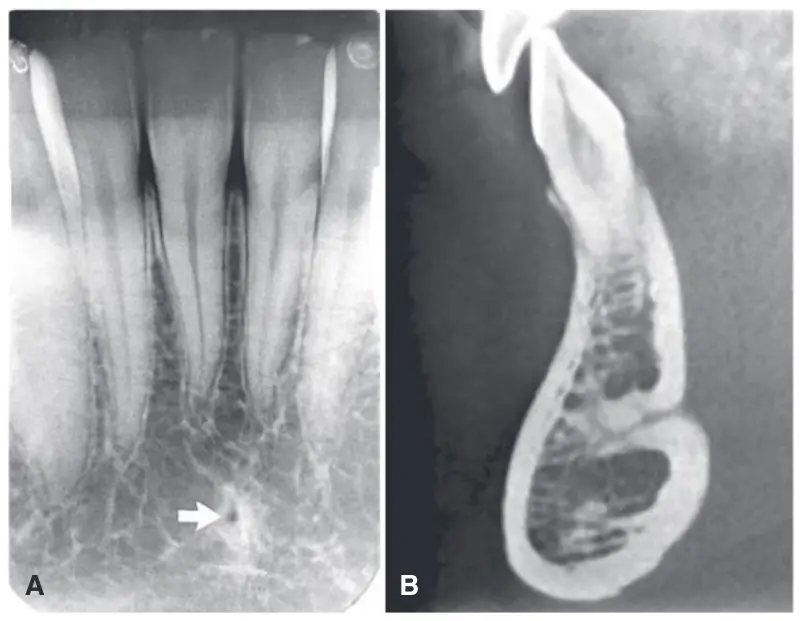

نسخه استخراجشده؛ ترجمه یا تأیید علمی انجام نشده است. وضعیت: captured
این یونیت یک فهرست نام نبود؛ یک فهرست اشتباههای رایج بود. بیشتر لندمارکهایی که خواندی، وقتی شناخته نشوند به تشخیص اشتباه میانجامند.

لندمارکهایی که ضایعه را تقلید میکنند — این فهرست را جدا نگه دار:
اعداد یونیت: ANS ۱٫۵ تا ۲ سانتیمتر بالای کرست، کونکا بولوزا ۱۴ تا ۵۳٪، اوستیوم ۳ تا ۶ میلیمتر، بلوغ سینوس ۱۵ تا ۱۸ سالگی، سوراخ لینگوال ۹۶ تا ۱۰۰٪، توبرکل ژنیال ۳ تا ۴ میلیمتر، سوراخ منتال تنها نیمی از مواقع دیده میشود، سوراخ منتال فرعی ۷٪، کانال بایفید ۱۵٪، کانال نوترینت ۵ تا ۴۰٪، مایلوهایوئید ۱۰ میلیمتر زیر ریج در پرمولر دوم و ۵ میلیمتر زیر کرست در مولر سوم.
و سه راهحل که با هم قاطی نشوند: کرونوئید روی مولر بالا → کلیشه را دوباره بگیر (وضعیت دهان)، سوراخ منتال روی آپکس → زاویهی دیگر، کانال آلوئولار تحتانی روی آپکس → تغییر زاویهی عمودی جدایشان نمیکند، سراغ تست حیات برو.
صفحات کورتیکال باکال و لینگوال روی پریاپیکال، بایتوینگ و پانورامیک تصویر جداگانهای نمیسازند؛ برای دیدنشان به مقاطع اگزیال، کرونال یا عرضی CBCT نیاز داری.
سؤالهای این مرور سختترند و بسیاری از آنها دو لندمارک را کنار هم میگذارند تا ببینند کدام را با کدام اشتباه میگیری.
نوع سؤال: ساخت کلمه · 4 خانه
حروف منبع: م · ر · و · و